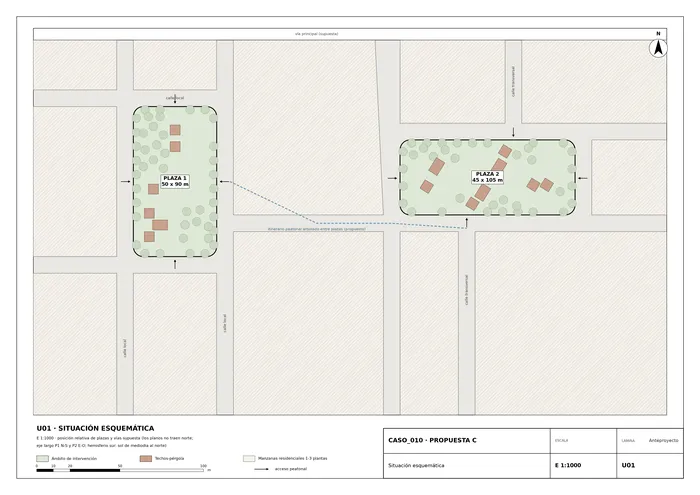
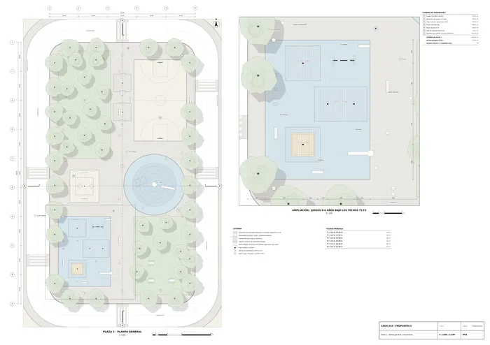
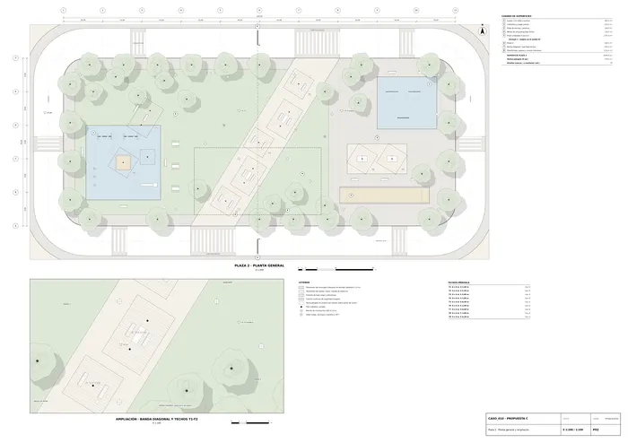
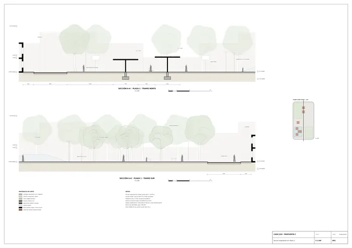
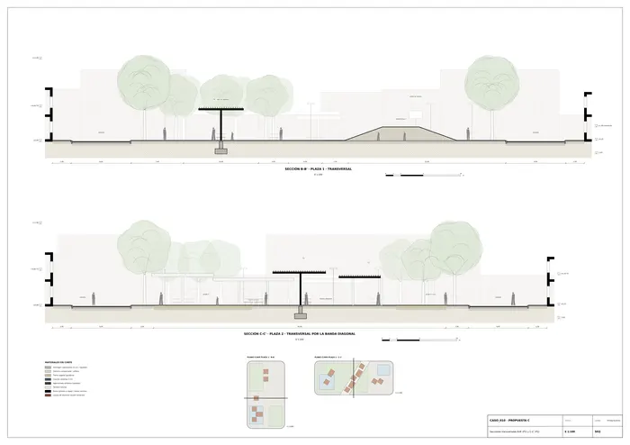
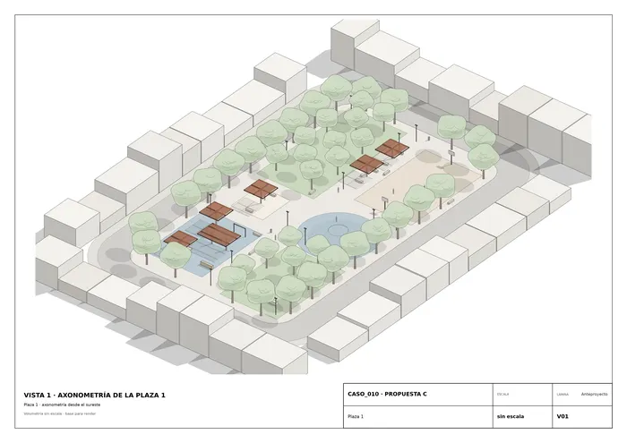
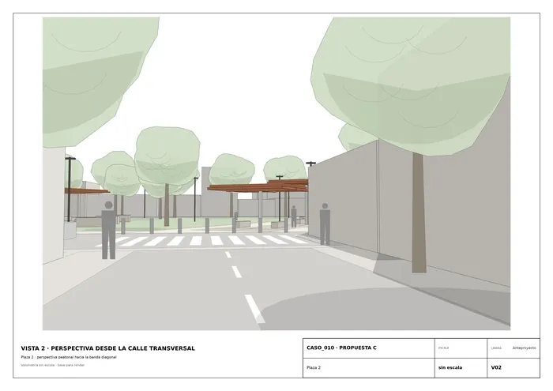
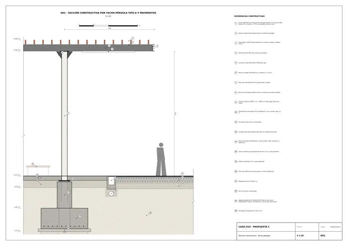

Caso 010 · Galpón Estudio · 2014 · espacio público (plazas de barrio)
Anteproyecto de dos plazas de barrio · Memoria
La propuesta se ha desarrollado solo a partir del informe anonimizado y del boceto.
El boceto muestra una calle tranquila que desemboca en un claro. Lo enmarcan dos árboles enormes y, en el fondo, hay unos techos ligeros naranjas sobre pies finos, flotando sobre un suelo verde. La plaza no se presenta como un objeto. Es un lugar de sombra que se descubre desde la calle.
La propuesta convierte esa imagen en sistema. Cada plaza es un archipiélago de techos-pérgola de lamas terracota, sueltos, de dos tamaños (6×6 y 9×6 m) y de alturas distintas (3,40-4,80 m). Se posan sobre una plataforma única a +0,15 y quedan bajo una corona de arbolado que se conserva y se completa. Los techos son la señal urbana que pide el encargo («reconocibles desde la ciudad»): asoman al final de las calles, como en el boceto. Debajo de ellos se reúnen los usos de estancia.
| Lectura | Qué se ve | Consecuencia |
|---|---|---|
| Literal | Un pabellón de pérgolas en el centro de la plaza, con árboles a los lados y césped delante. Las líneas son vigas, pilares y un plano verde. | Un único gran emparrado central y un anillo de árboles perimetral: un «claustro verde» que copia la forma de la parcela. |
| Diagramática | Las líneas naranjas no forman un edificio, son trazos discontinuos y superpuestos, a varias alturas y ligeramente desalineados. Los árboles negros son los límites y la calle es el eje de llegada. El verde es el suelo que se abre al final del recorrido. | La sombra se fragmenta en piezas independientes de tamaño y altura diferentes, que siguen los recorridos y no la geometría de la parcela. La plaza se entiende como continuación de las calles que llegan a ella. |
| P1 · Claustro verde (literal) | P2 · Archipiélago de techos (diagramático) — ELEGIDO | P3 · Borde habitado y claro hundido | |
|---|---|---|---|
| Organización | Anillo de árboles y gran pérgola central de 25×36 m; usos alrededor | Cuadrantes alternos (verde / juego / deporte) cosidos por un paseo en cruz. En la plaza 2, una banda diagonal une las dos calles transversales | Galerías cubiertas de 6 m en los lados largos; centro vacío hundido -0,60 m |
| Piezas | 1 pieza grande idéntica en las dos plazas | 15 piezas de 2 tipos y 7 alturas, agrupadas por uso | 4 galerías lineales |
| Geometría | Copia la parcela | Plaza 1 ortogonal. Plaza 2 girada 58°, según la línea entre calles | Copia la parcela |
| Sección | Plano único | Techos a alturas distintas y montículo de juego de 1,80 m | Borde alto y centro bajo (retención de agua) |
| Programa | Bien, pero concentra todo en el centro | Bien: cada uso tiene su zona y su sombra | Bien en estancia; los juegos quedan dispersos en el borde |
| Clima (Cfa, sol al norte) | Sombra grande y continua; mucha superficie dura bajo pérgola | Sombra repartida donde se está quieto; los prados reciben sol de invierno | La retención ayuda frente a las tormentas, pero las galerías largas dan sombra a la acera y poco al juego |
| Vistas y reconocimiento | El pabellón se ve, pero tapa el fondo | Los techos asoman al final de las calles (boceto) y la plaza se atraviesa con la vista | Desde la calle se ve un muro de galerías |
| Accesos | 4 puntos medios | Todos los lados, con plataformas en las prolongaciones de las calles | Solo por los extremos cortos de las galerías |
| Normativa (seguridad, accesibilidad) | Correcta | Correcta: plataforma única sin escalones | El claro hundido exige rampas perimetrales y es un riesgo con agua |
Por qué se descarta P1: una sola pieza central idéntica en dos parcelas que el encargo describe como diferentes niega el «adaptada a cada una». Además, convierte el centro en un gran porche duro, con mucho mantenimiento y poco verde. Por qué se descarta P3: traslada la vida al borde, que es justo donde está el tráfico. El centro hundido es atractivo como depósito de tormentas, pero obliga a rampas en todo el perímetro y no es un lugar de juego seguro con agua. P2 cuestiona dos supuestos que el encargo no impone: que la forma de la intervención deba copiar la geometría de la parcela (la plaza 2 se organiza según la diagonal entre las dos calles que llegan) y que las piezas repetidas deban ser idénticas (dos tipos, siete alturas y tres agrupaciones).
Orientación adoptada, justificada en U01: no hay norte en los planos, así que se toma el eje largo de la plaza 1 en dirección N-S y el de la plaza 2 en dirección E-O. En el hemisferio sur el sol de mediodía queda al norte, de modo que los juegos de pequeños se colocan en la mitad sur de cada plaza, bajo techos y árboles. Los prados quedan abiertos al sol del norte en invierno.
Plaza 1 (50×90 m, 4.469 m²) · la plaza de juego. Paseo central N-S (eje 25,00) y cruce E-O a media plaza. Las cuatro zonas se alternan en damero:
Plaza 2 (45×105 m, 4.694 m²) · la plaza de paso y estancia. Las dos calles transversales desembocan en los lados largos (x = 40 al sur y x = 68 al norte). Una banda diagonal de 12 m las une y atraviesa la plaza; en ella se encadenan cinco techos (T1-T5), con mesas y bancos: la «sala» del barrio. A la izquierda de la banda, un prado arbolado con juegos de 3-12 años (400 m²) y mesas de pícnic. A la derecha, una plataforma de juegos de mesa y deporte ligero para jóvenes y mayores: dos mesas de ping-pong bajo T8 y T9, pista de bochas o petanca de 24×4,5 m y calistenia sobre caucho (224 m²).
Las dos plazas comparten un mismo lenguaje (plataforma, techos terracota, corona de árboles, mobiliario y luminarias) con dos programas complementarios. Juntas suman 9.163 m² de intervención.
| Exigencia del informe | Exigido | Propuesto | Cumple / desviación y motivo |
|---|---|---|---|
| Zona de juegos infantiles | En cada plaza; niños de distintas edades; superficie segura | P1: 0-6 años (432 m²) + montículo 6-12 años (346 m²). P2: 3-12 años (400 m²) + calistenia juvenil (224 m²). Todo sobre caucho continuo con HIC según altura de caída | Cumple |
| Zonas de estancia con mobiliario (bancos, mesas) | En cada plaza | P1: 14 bancos, 3 mesas de pícnic, 2 mesas de ajedrez. P2: 20 bancos, 3 mesas de pícnic, 2 mesas largas bajo techo | Cumple |
| Espacios con sombra | Natural o construida | 15 techos-pérgola (P1: 6 ud., 234 m²; P2: 9 ud., 378 m²) + 80 árboles de copa grande | Cumple |
| Zonas verdes y arbolado | Bajo mantenimiento, adecuadas al clima | Praderas de bajo riego: P1 1.152 m², P2 1.783 m² netos. Arbolado perimetral y en bosquetes con especies caducas de clima templado-cálido | Cumple |
| Recorridos peatonales accesibles | Conexión con viales y aceras | Plataforma única a +0,15 sin escalones; pasos de peatones elevados a la misma cota en los 6 accesos de P1 y los 8 de P2 | Cumple |
| Equipamiento deportivo o de ocio ligero | Opcional | P1: pista multiuso de 504 m². P2: bochas (108 m²), ping-pong (2 mesas) y calistenia | Cumple (se incluye) |
| Iluminación y mobiliario urbano (papeleras, bebederos) | Seguridad nocturna | P1: 16 báculos LED; P2: 18. LED lineal bajo cada techo. Papeleras: 8 + 8. Bebederos: 2 + 2. Aparcabicis: 2 + 2 | Cumple |
| Edificación cerrada | No se prevé | Ninguna: solo techos abiertos de lamas | Cumple |
| Superficie total de intervención | 7.000-12.000 m² | 9.163 m² (P1 4.469 + P2 4.694) | Cumple |
| Número de plazas y adaptación a cada parcela | Propuesta conjunta, lenguaje coherente, adaptada a cada una | 2 plazas con el mismo sistema y organizaciones distintas: damero ortogonal en P1 y banda diagonal en P2 | Cumple |
| Tipos de techo (unidades) | No fijado | Tipo A 6×6 m, pilar único: 11 ud. (P1 5, P2 6). Tipo B 9×6 m, dos pilares: 4 ud. (P1 1, P2 3). Siete alturas entre 3,40 y 4,80 m | Sin exigencia; los tipos se diferencian a propósito |
| Accesibilidad universal | Obligatoria | Sin desniveles. Pendientes de evacuación del 1 %. Itinerario accesible hasta cada zona de juego. Mesas con un extremo libre para silla de ruedas. Juegos inclusivos (columpio de cesta) | Cumple |
| Mantener la sección de las calzadas perimetrales | Obligatoria | Calzada de 8 m intacta; solo se elevan los pasos de peatones, con rampa para vehículos de 1:10 | Cumple |
| Seguridad del equipamiento infantil | Obligatoria | Áreas de seguridad dibujadas (discontinuo en planta); caucho con HIC suficiente; juegos alejados ≥ 3 m de la calzada y protegidos por bolardos y arbolado | Cumple |
| Uso seguro a cualquier hora | Requisito del encargo | Visibilidad transversal completa (sin setos altos); copas elevadas a más de 2,5 m; iluminación de 15-20 lux en recorridos | Cumple |
| Mantenimiento reducido | Requisito del encargo | Hormigón fratasado, acero galvanizado y lamas de aluminio lacado; praderas de especies rústicas; riego por goteo solo en arbolado joven | Cumple |
| Reconocible desde la ciudad | Requisito del encargo | Los techos terracota asoman al final de las calles; accesos en la prolongación de las calles transversales | Cumple |
El informe no menciona edificación existente dentro de las parcelas. Se supone que el arbolado perimetral existente (el de alineación) se conserva y se completa hasta formar la corona dibujada; no hay inventario. No se demuele nada construido; solo se sustituyen los pavimentos.
P01 y P02: plantas generales a 1:200 con ampliación a 1:100. S01: sección longitudinal A-A', en dos tramos. S02: secciones transversales B-B' y C-C'. D01: sección constructiva a 1:20. U01: situación a 1:1000. DXF de las plantas y las secciones, con capas por tipo de elemento.

U01 · Situación esquemática
P01 · Plaza 1 · Planta general y ampliación
P02 · Plaza 2 · Planta general y ampliación
S01 · Sección longitudinal A-A' (Plaza 1)
S02 · Secciones transversales B-B' (P1) y C-C' (P2)
V01 · Plaza 1
V02 · Plaza 2
D01 · Sección constructiva · techo-pérgolaMemoria de la propuesta tal como la entregó el sistema. Se han omitido las notas internas del proceso (revisiones, control de reconocimiento y referencias a archivos de trabajo).